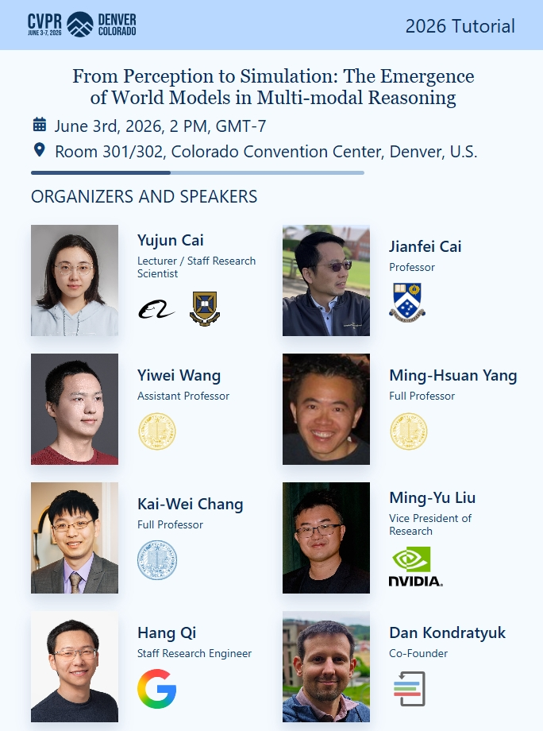

Tutorial: From Perception to Simulation: The Emergence of World Models in Multi-modal Reasoning
Keywords: World models | Multi-modal reasoning | Perception to simulation
Keywords: Multimodal reasoning, video LLMs, diffusion generalization, object-centric representation, and creative sound generation.

Keywords: World models | Multi-modal reasoning | Perception to simulation

Keywords: Audio-visual generation | Creative Foley | Event control

Keywords: Self-supervised ViTs | Object discovery | Representation analysis

Keywords: Video LLMs | Temporal encoding | Training-free stabilizer

Keywords: Diffusion models | Generalization | Segmented guidance